Your browser doesn’t support the features required by impress.js, so you are presented with a simplified version of this presentation.
For the best experience please use the latest Chrome, Safari or Firefox browser.
The Fight Against Divitis
Dan Mouyard
Senior
Interface
Engineer
dmouyard@forumone.com
@dcmouyard
Learn About Divitis
Diagnostic Tools
Drupal Toolbox
What is Divitis?
<div id="page-wrapper">
<div id="page">
<div id="main-wrapper">
<div id="main">
<div id="content">
<div class="section">
<h1 id="page-title">Title</h1>
<div class="region">
Even more divs…
</div>
</div>
</div>
</div>
</div>
</div>
</div>
<div id="block-system-main">
<div class="content">
<div class="view">
<div class="view-content">
<div class="views-row">
<div id="node-2" class="node">
<h2><a>Node Title</a></h2>
<div class="submitted">…</div>
Even more divs…
</div>
</div>
</div>
</div>
</div>
</div>
<div class="content">
<div class="field field-name-field-image">
<div class="field-items">
<div class="field-item">
<img>
</div>
</div>
</div>
<div class="field field-name-body">
<div class="field-items">
<div class="field-item">
<p>Some content…</p>
</div>
</div>
</div>
</div>
17
Themes: Nesting Depth
- Mothership: 7
- Mojo: 8
- Zen 5.x: 10
- AdaptiveTheme: 14
- Omega 3.x: 17
- Stark: 17
- Bartik: 18
- Garland: 18
What’s Wrong with Divitis?
Performance and Semantics
Performance Hits*
- Nesting Depth
- Number of DOM nodes
- Larger Filesizes
Performance hits due to divitis are relatively small.
Tackle other performance problems first!
- Optimize Images
- Minify Scripts & Stylesheets
- Reduce HTTP Requests
- Use a Reverse Proxy Server
Performance
is a major concern for
Web Apps
and
Mobile Sites
Semantics are Important
for Machines
- Assistive Technology (e.g., Screen Readers)
- Search Engines
- Semantic Web
<article>
<h1>Article Title</h1>
<footer>
<time datetime="2012-07-28">July 28, 2012</time> by Author
</footer>
<figure>
<img>
<figcaption>Image caption</figcaption>
</figure>
<p>
A paragraph of text with <strong>important</strong> and
<em>emphasized</em> words using semantic
<abbr title="HyperText Markup Language">HTML</abbr>
elements.
</p>
</article>
<div class="article">
<div class="title">Article Title</div>
<div class="byline">
July 28, 2012 by Author
</div>
<div class="figure">
<img>
<div class="caption">Image caption</div>
</div>
<div class="p">
A paragraph of text with
<span class="bold">important</span> and
<span class="italic">emphasized</span> words using
non-semantic HTML elements.
</div>
</div>
What Causes Divitis?
Flexibility
Lack of CSS Knowledge
Internet Explorer
Developer != Themer
Diagnostic Tools
Firebug
http://getfirebug.com
Chrome Developer Tools
Firefox 3D View
DOM Monster
http://mir.aculo.us/dom-monster
Drupal Toolbox
http://www.flickr.com/photos/10687935@N04/2376359338
Devel Themer
Devel Themer
http://drupal.org/project/devel_themer
Preprocess Functions
& Templates
template.php
function THEME_preprocess_region(&$vars) {
// Remove classes from main content region.
if ($vars['region'] == 'content') {
$vars['classes_array'] = array();
}
}
region.tpl.php
<?php if ($content): ?>
<?php if ($classes != ''): ?>
<div class="<?php print $classes; ?>">
<?php endif; ?>
<?php print $content; ?>
<?php if ($classes != ''): ?>
</div>
<?php endif; ?>
<?php endif; ?>
Fences
Manage Fields
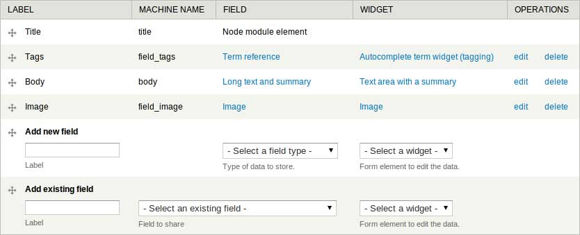
Define Field Wrapper Markup
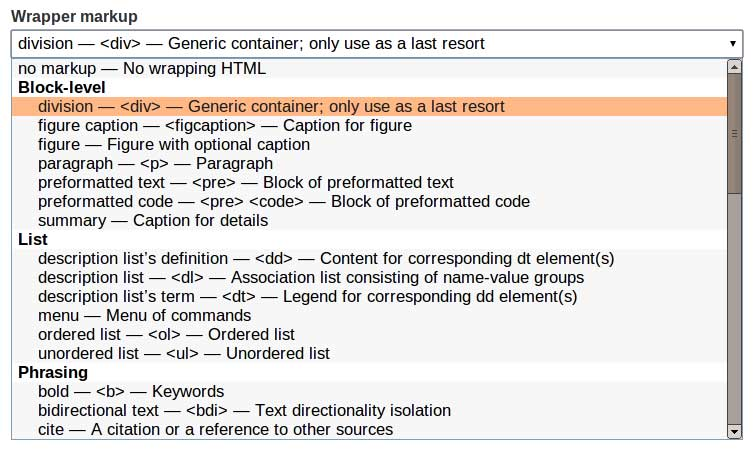
Display
Suite
Manage Display
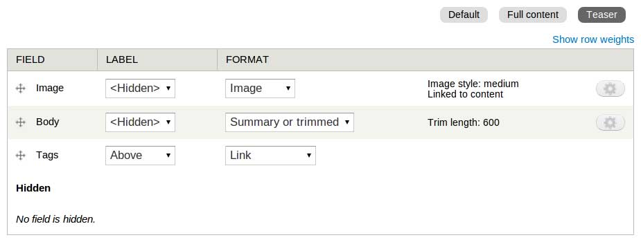
Create New View Modes
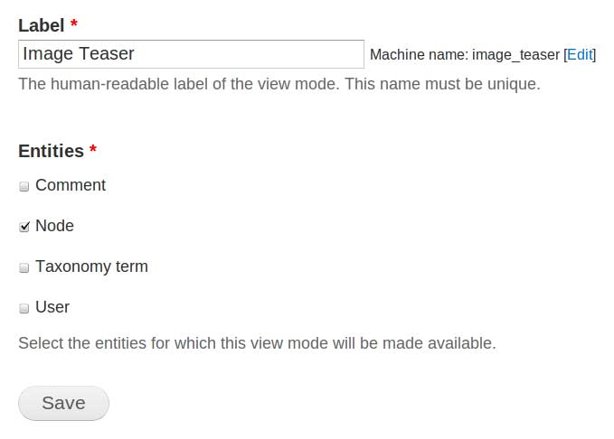
Select Layout
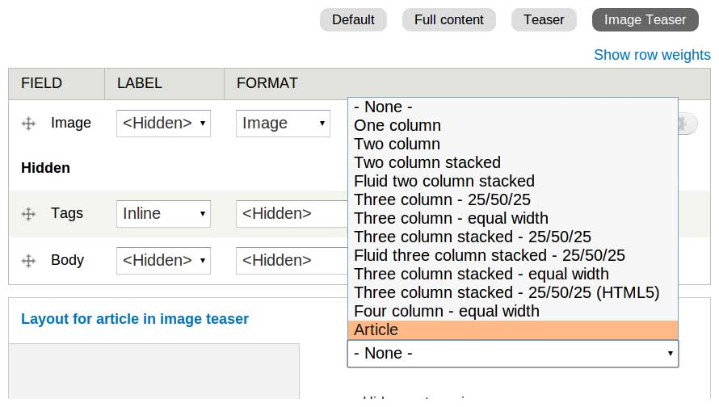
Additional Fields
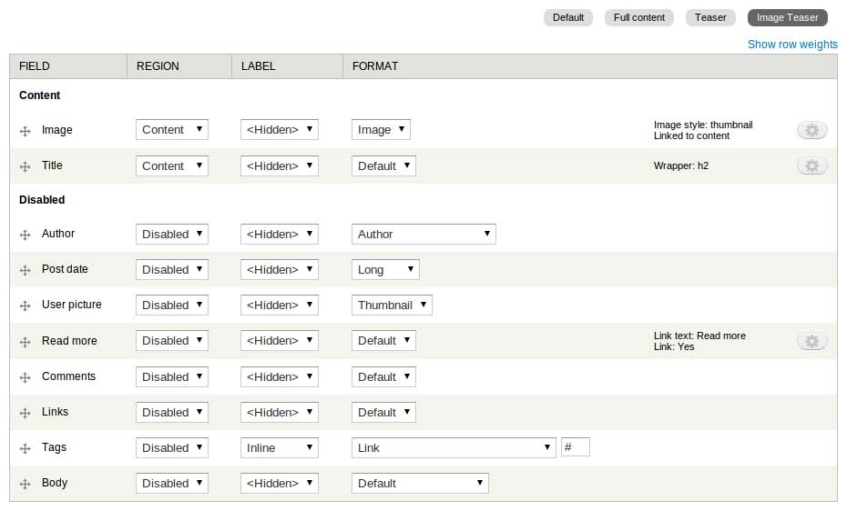
ds_layouts/article/article.inc
function ds_article() {
return array(
'label' => t('Article'),
'regions' => array(
'main_content' => t('Content'),
),
);
}
ds_layouts/article/article.tpl.php
<article class="<?php print $classes;?>">
<?php if (isset($title_suffix['contextual_links'])): ?>
<?php print render($title_suffix['contextual_links']); ?>
<?php endif; ?>
<?php print $main_content; ?>
</article>
Views
Display Content
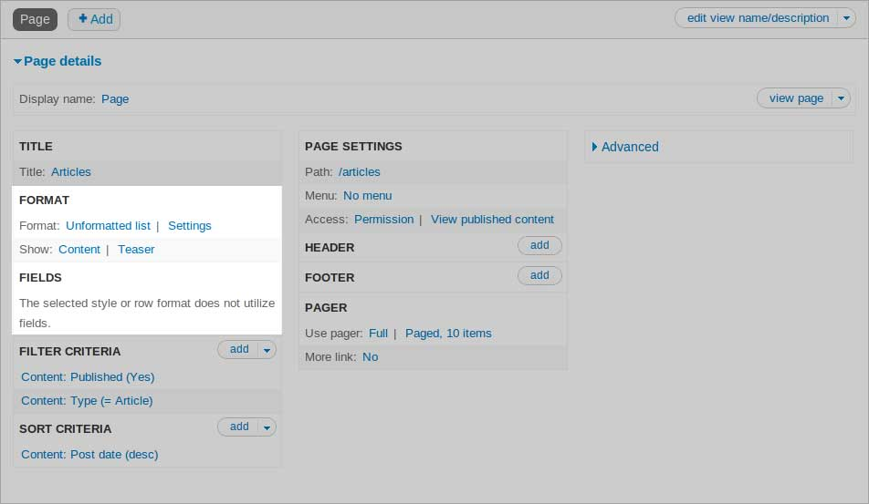
Choose View Mode
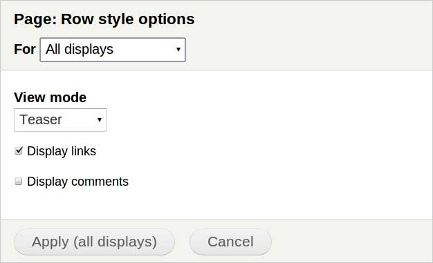
Display Fields
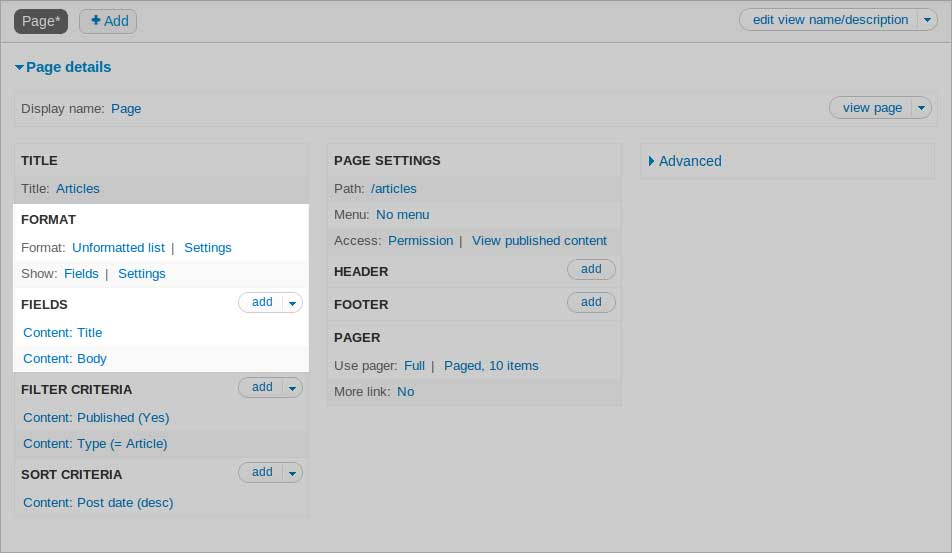
Don't Display Default Field Wrappers
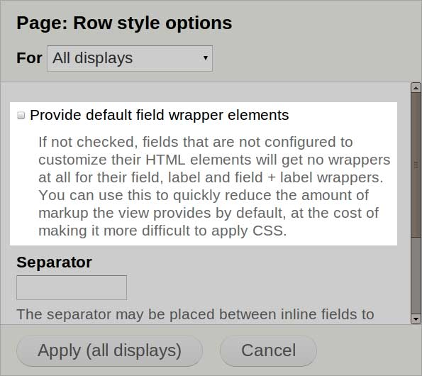
Customize Field HTML
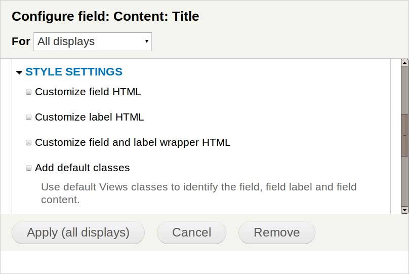
Panels
THEME.info
plugins[panels][layouts] = panels/layouts
panels/layouts/simple/simple.inc
function THEME_simple_panels_layouts() {
$items['simple'] = array(
'title' => t('Simple layout'),
'category' => t('Columns: 1'),
'icon' => 'simple.png',
'theme' => 'simple',
'admin css' => 'simple.css',
'regions' => array(
'main_col' => t('Main column'),
),
);
return $items;
}
panels/layouts/simple/simple.tpl.php
<?php if (!empty($css_id)) { print "<div id=\"$css_id\">"; } ?>
<?php print $content['main_col']; ?>
<?php if (!empty($css_id)) { print '</div>'; } ?>
template.php
/**
* Override HTML for default panel regions.
*/
function THEME_panels_default_style_render_region($vars) {
$output = implode('', $vars['panes']);
return $output;
}
Theme
Functions
http://api.drupal.org
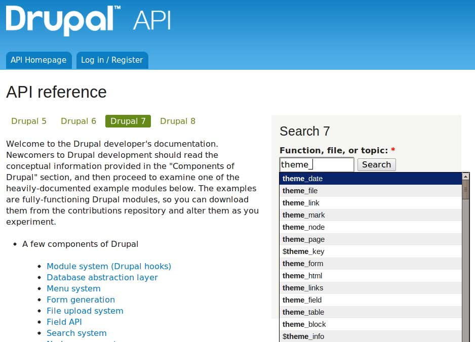
@dcmouyard
dcmouyard.github.io/fight-against-divitis